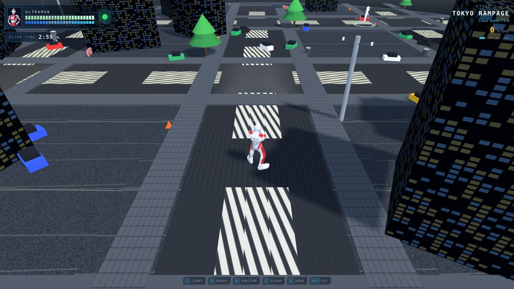
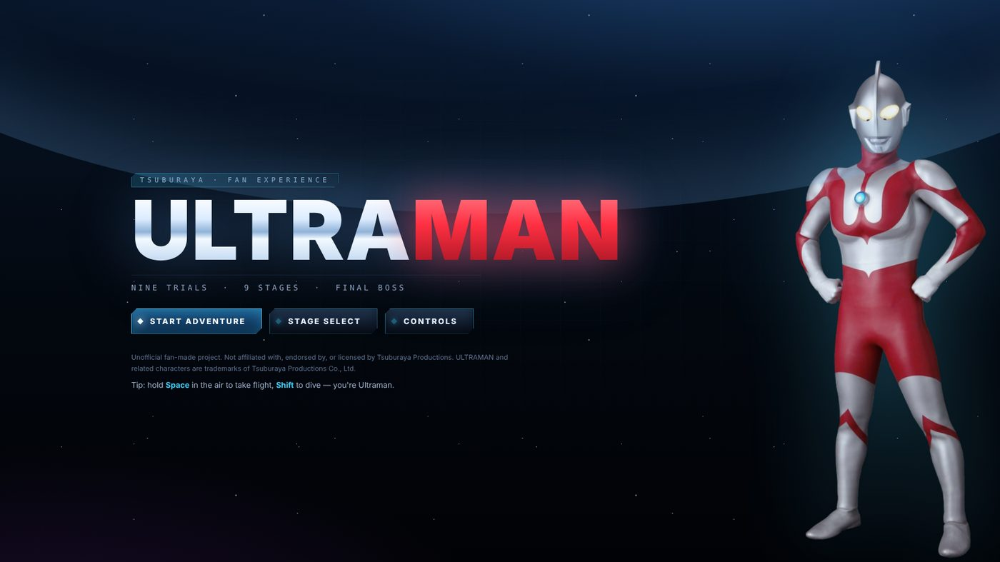
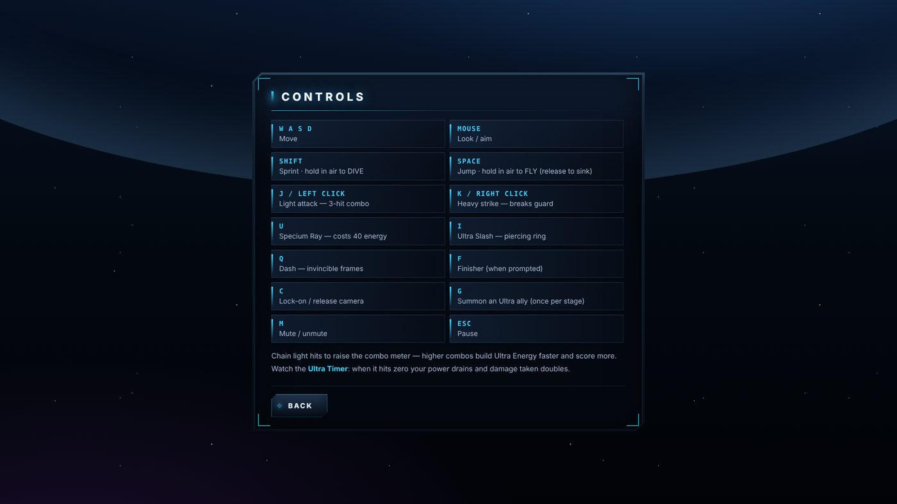
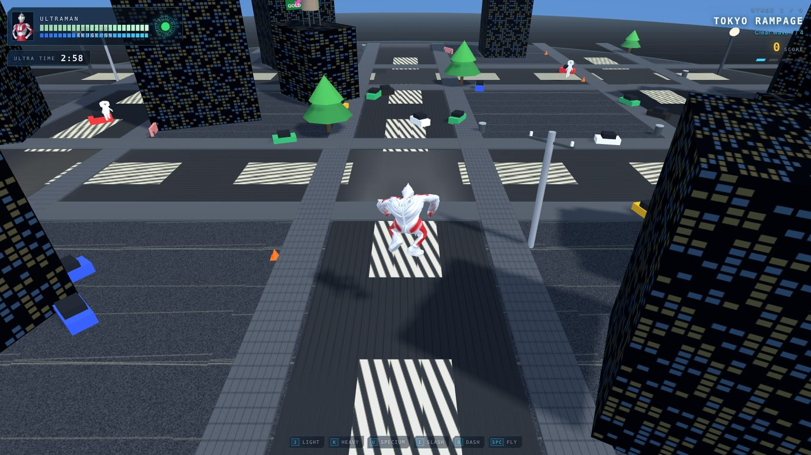
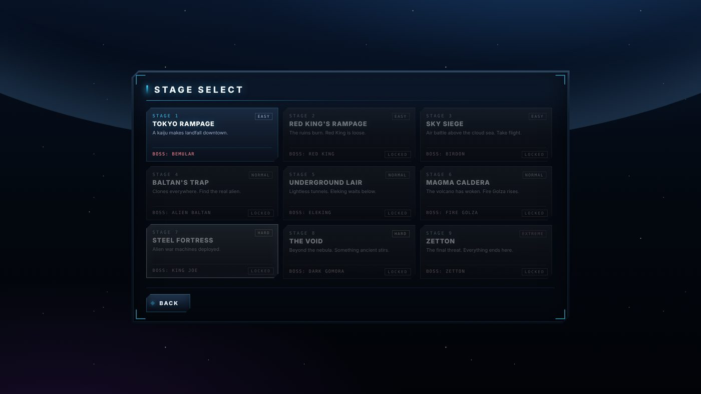

NO.01
Pertarungan yang terasa mantap
Serangan beruntun, pukulan berat yang memecah pertahanan, tembakan sinar, tebasan, dan jurus pamungkas. Setiap pukulan ada efek jeda dan layar bergetar, jadi kena atau tidak kena langsung terasa.
NEW GAME NO.01 · PROYEK FAN
Game aksi bergaya tokusatsu yang langsung jalan di browser. 9 level, 9 boss, dan nol instalasi. Buka link, tekan mulai, selesai.

▶ MAIN◆◆◆ Demo bisa dimainkan sekarang
FITUR
NO.01
Serangan beruntun, pukulan berat yang memecah pertahanan, tembakan sinar, tebasan, dan jurus pamungkas. Setiap pukulan ada efek jeda dan layar bergetar, jadi kena atau tidak kena langsung terasa.
NO.02
Tahan Space di udara untuk terbang, tahan Shift untuk meluncur turun menghantam musuh.
NO.03
Dari pusat kota, langit di atas awan, sampai ruang angkasa. Tiap level punya tampilan dan lawan sendiri.
NO.04
Ada kontrol layar sentuh, jadi buka link dari HP juga jalan.
NO.05
Semua efek suara dibuat di browser, tanpa file audio. Hasilnya ringan dan cepat terbuka.
NO.06
Level yang sudah dibuka dan skor terbaik tersimpan otomatis di browsermu.
#JURUS
Gabungkan serangan ringan jadi combo, simpan energi untuk sinar, dan pakai lari cepat untuk menghindar tepat waktu. Awasi Ultra Time di pojok layar: kalau habis, tenagamu terkuras dan damage yang kamu terima berlipat.
CARA MAIN
Klik tombol Main di browser. Layar judul akan muncul.
Level pertama langsung terbuka. Level lain terbuka satu per satu setelah kamu menang.
Serang dengan J atau klik kiri. Di HP, pakai tombol di layar.


LEVEL
Monster mendarat di tengah kota.
Reruntuhan menyala, monster lepas.
Pertempuran udara, saatnya terbang.
Musuh ada di mana-mana. Cari yang asli.
Tanpa cahaya, ada yang menunggu di bawah.
Gunung berapi terbangun.
Mesin perang alien sudah dikerahkan.
Sesuatu yang sangat tua mulai bangun.
Semuanya berakhir di sini.


CERITA DI BALIK GAME
Tokusatsu Brawler lahir dari masalah yang sederhana: untuk pitching ke investor, aku butuh game yang bisa dimainkan, bukan cuma slide. Tapi satu prototype biasanya makan waktu 2-3 bulan.
Jadi aku bangun kerangka yang bisa dipakai ulang: karakter, kontrol, pertarungan, efek, dan level. Hasilnya, satu prototype selesai dalam 1 hari. Game kedua yang memakai kerangka yang sama selesai dalam kurang dari 12 jam.
Panjang batang hanya ilustrasi perbandingan.
SIAP?
Tidak perlu akun, tidak perlu unduh. Siapkan keyboard atau buka dari HP.